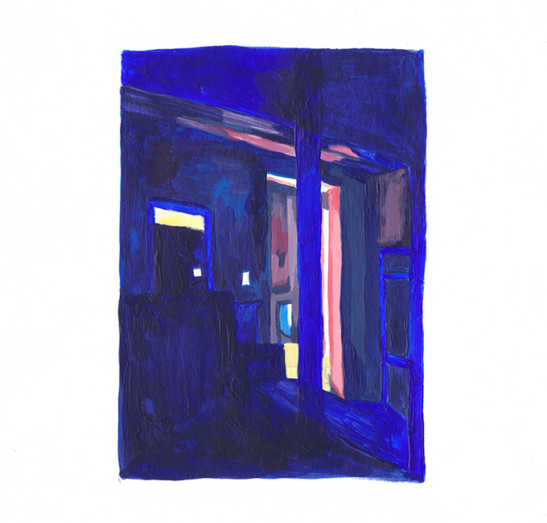
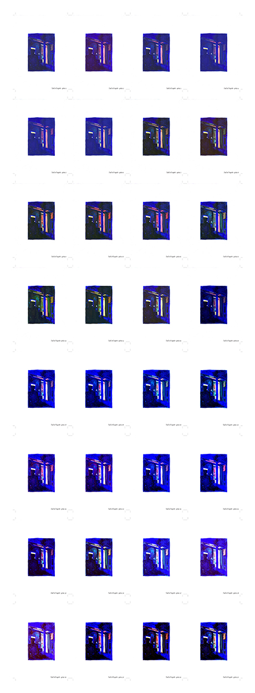
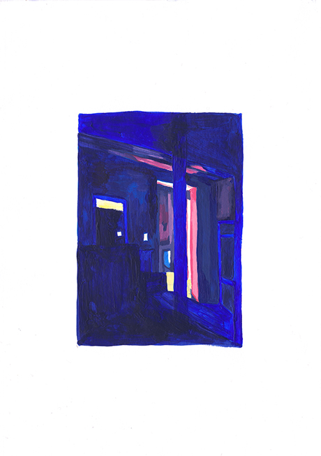
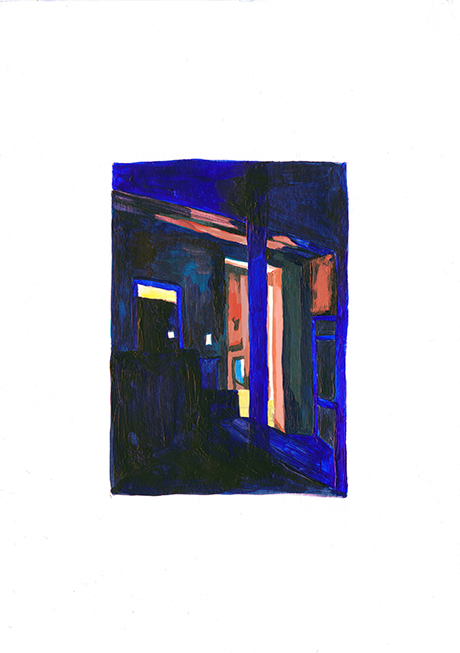
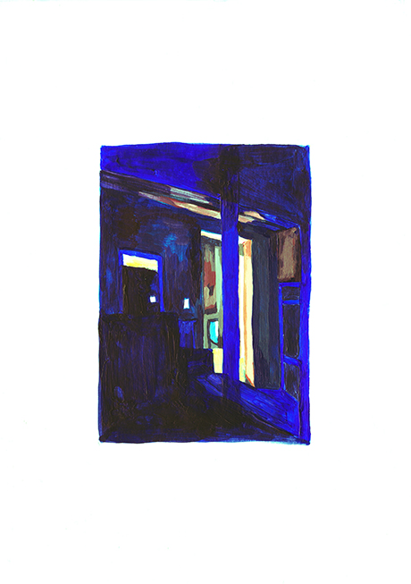
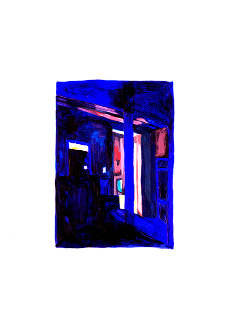

mafalda moreaud
design graphique
L'Œil et l'Esprit—Les perceptions
Formats A6 / Poster 90 x 1500mm / 2 gifs
Imprimé au traceur
Toulouse—Décembre 2017
Ce projet est une expérimentation sur le thème des perceptions et de la vision. Comment la vision
nous permet de traduire ce que nous percevons en gestes? Quelles sont les limites entre le visible,
« les possibilités » de la vision, le perceptible et le perçu? Dans quelle mesure l’interprétation,
le ressenti propre à la personne et ce qu’elle connait du lieu va influencer la perception qu’elle
en a et la retranscription qu’elle va pouvoir en faire? Ce projet traite du rapport aux lieux, à l’espace
mais aussi de la notion d’instant, de ce qui inscrit un moment dans le temps et l’espace. C’est peut-être
ce qu’on pourrait appeler assez paradoxalement une sorte d’expérience éphémère constante… Les lumières
constituent un élément clef de ces expériences. Elles le signalent, le rendent spécial et nous projettent
dans différents univers et ambiances. À cette production s’ajoutent des limites de traduction et à ma perception
de cet espace se projettent toutes formes d’interprétations qui découlent elles-même de ce que « je suis ».
J’aurai beau m’attacher à tenter de représenter l’instant perçu je ne pourrai jamais vraiment le reproduire
dans sa totalité. D’une part parce que cet instant implique un mouvement et une position qui eux même induisent
une temporalité. De plus ces courts instants sont spéciaux justement parce qu’ils sont limités dans le temps.
En suite, ma sensibilité, et tout ce que je projette dedans vont inconsciemment influencer la forme que je vais donner
à cette traduction. Ce serait comme une part complètement fabulée du réel, si tant est qu’on puisse parler de réel.
Finalement tout est question de perception et non de réalité.
La série aborde le thème de l'intérieur/extérieur et explore un certain panel de possibilités en terme
de lumières et de couleurs. Les micro animations réalisées donnent l’impression d’une évolution dans le temps,
d’un mouvement. La lumière semble tourner dans l’espace. C’est une tentative d’imagination de ce qu’aurait pu être
cet l’instant. Elles sont à regarder ensemble afin que la sensation soit plus complète.
nous permet de traduire ce que nous percevons en gestes? Quelles sont les limites entre le visible,
« les possibilités » de la vision, le perceptible et le perçu? Dans quelle mesure l’interprétation,
le ressenti propre à la personne et ce qu’elle connait du lieu va influencer la perception qu’elle
en a et la retranscription qu’elle va pouvoir en faire? Ce projet traite du rapport aux lieux, à l’espace
mais aussi de la notion d’instant, de ce qui inscrit un moment dans le temps et l’espace. C’est peut-être
ce qu’on pourrait appeler assez paradoxalement une sorte d’expérience éphémère constante… Les lumières
constituent un élément clef de ces expériences. Elles le signalent, le rendent spécial et nous projettent
dans différents univers et ambiances. À cette production s’ajoutent des limites de traduction et à ma perception
de cet espace se projettent toutes formes d’interprétations qui découlent elles-même de ce que « je suis ».
J’aurai beau m’attacher à tenter de représenter l’instant perçu je ne pourrai jamais vraiment le reproduire
dans sa totalité. D’une part parce que cet instant implique un mouvement et une position qui eux même induisent
une temporalité. De plus ces courts instants sont spéciaux justement parce qu’ils sont limités dans le temps.
En suite, ma sensibilité, et tout ce que je projette dedans vont inconsciemment influencer la forme que je vais donner
à cette traduction. Ce serait comme une part complètement fabulée du réel, si tant est qu’on puisse parler de réel.
Finalement tout est question de perception et non de réalité.
La série aborde le thème de l'intérieur/extérieur et explore un certain panel de possibilités en terme
de lumières et de couleurs. Les micro animations réalisées donnent l’impression d’une évolution dans le temps,
d’un mouvement. La lumière semble tourner dans l’espace. C’est une tentative d’imagination de ce qu’aurait pu être
cet l’instant. Elles sont à regarder ensemble afin que la sensation soit plus complète.
« A quoi bon, quand toute l’affaire
est de comprendre que nos yeux de chairs
sont déjà beaucoup plus que des récepteurs
pour les lumières, les couleurs et les lignes:
des computeurs du monde, et qui ont le don
du visible comme on dit que l’homme inspiré
a le don des langues. Bien sûr ce don se mérite
par l’exercice, et ce n’est pas en quelques mois,
ce n’est pas non plus dans la solitude
qu’un peintre entre en possession de sa vision.
La question n’est pas là: précoce ou tardive,
spontanée ou formée au musée, sa vision en tout
cas n’apprend qu’en voyant, n’apprend
que d’elle-même. »
Maurice Merleau-Ponty,
L’OEil et l’Esprit
Première parution en 1964
est de comprendre que nos yeux de chairs
sont déjà beaucoup plus que des récepteurs
pour les lumières, les couleurs et les lignes:
des computeurs du monde, et qui ont le don
du visible comme on dit que l’homme inspiré
a le don des langues. Bien sûr ce don se mérite
par l’exercice, et ce n’est pas en quelques mois,
ce n’est pas non plus dans la solitude
qu’un peintre entre en possession de sa vision.
La question n’est pas là: précoce ou tardive,
spontanée ou formée au musée, sa vision en tout
cas n’apprend qu’en voyant, n’apprend
que d’elle-même. »
Maurice Merleau-Ponty,
L’OEil et l’Esprit
Première parution en 1964








